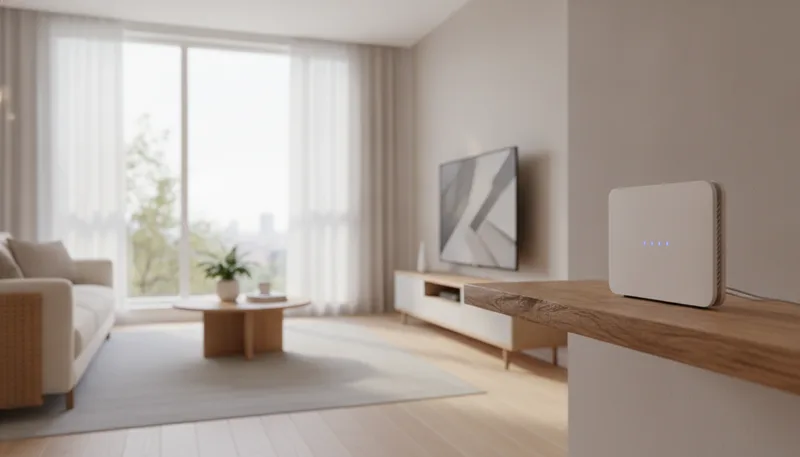
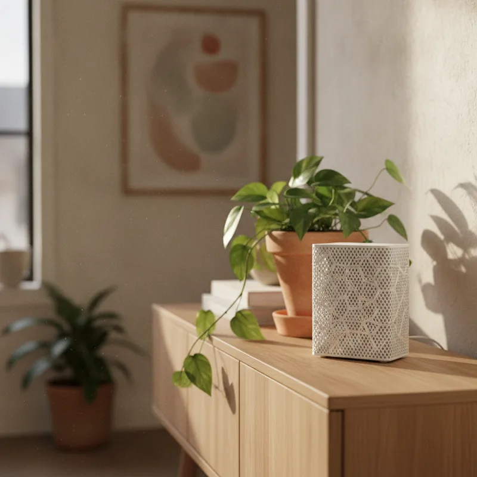
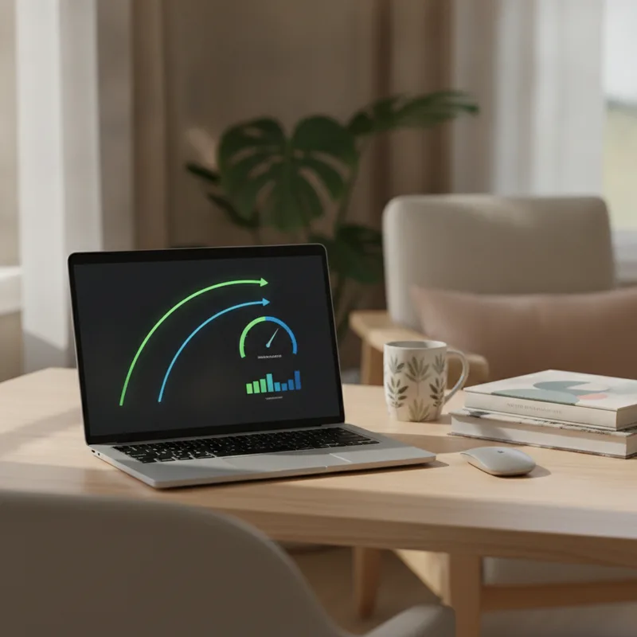

거실 공유기 바로 앞에서는 기가급 인터넷 속도가 나오더라도 안방이나 끝방 화장실만 들어가면 무선랜 신호가 한 칸으로 줄어드는 경우가 흔합니다. 두꺼운 콘크리트 벽과 철근 구조가 신호를 막아서 생기는 전형적인 음영지역 문제입니다.

공유기 한 대가 커버할 수 있는 무선 신호 범위에는 물리적인 한계가 존재합니다. 벽을 투과할 때마다 출력 손실이 커지기 때문입니다. 주파수 특성상 5GHz 대역은 속도가 빠르지만 장애물 투과력이 약하고, 2.4GHz 대역은 멀리 가지만 주변 신호 간섭에 취약합니다.
음영지역을 해소하고자 먼저 검토하는 대안이 와이파이 중계기(증폭기)입니다. 하지만 중계기를 설치하더라도 고화질 영상이 버벅거리고 게임 지연 시간이 길어지는 현상이 나타나기도 합니다. 장비의 통신 방식 자체가 기본 공유기와 다르기 때문입니다.
기본적인 메시 와이파이 뜻부터 짚어보면 구조 차이가 명확해집니다. 메시(Mesh)는 망이나 그물망을 뜻하며, 여러 대의 공유기를 하나의 유기적인 홈네트워크로 묶어주는 기술을 의미합니다.
중계기는 메인 공유기의 무선 신호를 받아서 단순히 다시 쏘아주는 역할만 수행합니다. 신호를 수신하고 다시 송출하는 과정에서 대역폭이 절반 수준으로 떨어지는 구조적 단점이 생깁니다. 접속 이름(SSID)이 메인 공유기와 따로 생성되어, 거실에서 방으로 이동할 때 와이파이가 완전히 끊겼다가 새로 붙는 불편함도 뒤따릅니다.
반면 메시 와이파이 설치 환경에서는 중앙 컨트롤러 역할을 하는 메인 공유기와 에이전트 역할을 하는 서브 공유기가 단일 네트워크를 구성합니다. 집 안 어디로 이동하든 핸드오버 기술 덕분에 신호가 가장 강력한 기기 쪽으로 끊김 없이 연결됩니다. 이 차이가 핵심입니다.
메시 시스템은 내부 통신 전용 대역을 할당하거나 랜선으로 기기끼리 직결하는 유선 백홀 방식을 활용합니다. 이동 시 속도 하락이나 병목 현상이 거의 나타나지 않는 이유입니다.
두 장비는 초기 구입 예산부터 신호 전달 방식까지 분명한 차이를 보입니다. 구체적인 성능 지표를 표로 비교해 두면 집 구조에 맞는 선택이 쉬워집니다.
| 비교 항목 | 와이파이 중계기 (증폭기) | 메시 와이파이 공유기 (Mesh) |
|---|---|---|
| 작동 방식 | 신호 단순 재송출 (1:1 브릿지) | 통합 무선망 구축 (N:N 메쉬 통신) |
| 네트워크 이름 (SSID) | 메인과 별도 SSID 생성 (수동 전환) | 단일 SSID 사용 (자동 핸드오버) |
| 속도 유지율 | 거리에 따라 대역폭 하락 발생 | 유선 백홀 사용 시 높은 속도 유지 |
| 초기 구축 비용 | 상대적으로 저렴함 | 중계기 대비 비용 부담 있음 |
| 설치 방식 | 콘센트 직결형 단일 기기 | 메인 컨트롤러 + 서브 노드 구성 |
| 권장 공간 | 원룸, 20평대 일자형 평면 구조 | 30평 이상, 복층, 벽이 많은 아파트 |
중계기는 가성비가 훌륭하고 설치가 간편하지만, 실시간 대용량 데이터를 주고받아야 하는 환경에서는 한계가 드러납니다. 메시 시스템은 초기 투자 비용이 들어가는 편이지만 집 전체를 단일 고속 와이파이 구역으로 바꿔줍니다.

구매 전 집 안의 단자함 상태와 유선 배선 환경을 점검하면 시행착오를 줄일 수 있습니다.
방마다 유선 랜 포트가 연결되어 있다면 유선 백홀 기반으로 메시 망을 잡는 것이 가장 좋습니다. 무선 백홀 대비 지연 시간이 대폭 줄어들고 원래 인터넷 속도를 온전히 뽑아냅니다. 유선 연결이 불가능하다면 5GHz 대역 하나를 백홀 전용으로 돌리는 트라이밴드 메시 공유기를 고르는 편이 유리합니다.
국내 시장에서는 ipTIME의 이지메시 지원 라인업이 구성 편의성 면에서 무난합니다. 거실에 Wi-Fi 6 지원 AX3000급 이상 모델을 메인으로 두고, 신호가 약한 방에는 AX1500급 모델을 서브로 물리적인 노드를 추가하는 구성이 자주 활용됩니다.
TP-Link의 Deco 시리즈나 ASUS의 AiMesh 지원 제품군 역시 안정적인 로밍 속도로 호평을 받습니다. 전용 모바일 앱을 이용해 기기 설치 위치별 신호 강도를 리얼타임으로 체크할 수 있어 세팅 난이도가 낮습니다.
단순 텍스트 검색이나 영상 시청이 위주이고 20평대 일자형 구조라면 저렴한 중계기로도 충분할 수 있습니다. 굳이 고가의 메시 기기를 고집할 필요는 없습니다. 끊김 없는 이동성과 인터넷속도 유지 필요성이 기준이 됩니다.
설정 과정은 단순합니다. 메인 공유기 설정 페이지나 모바일 앱에서 메시 메뉴를 켠 뒤, 서브 공유기의 WPS 버튼을 누르거나 앱 안내를 따르면 자동으로 결합됩니다.
표준 규격인 이지메시(EasyMesh)를 공식 지원하는 기기라면 제조사가 달라도 묶어서 사용할 수 있는 경우가 많습니다. 다만 브랜드 전용 메시 기술(ASUS AiMesh, TP-Link Deco 전용 라인 등)은 동일 브랜드 제품끼리만 호환되므로 사전에 세부 규격표를 찾아봐야 합니다.
일부 통신사 제공 Wi-Fi 6 전용 공유기는 자체 메시 구성을 지원하기도 합니다. 고객센터를 통해 서브 공유기 추가 신청을 진행하면 추가 임대료를 부담하고 설치받을 수 있습니다. 장비 고장 시 A/S 지원이 용이하다는 장점이 있습니다.
중계기를 여러 대 늘려도 메시 네트워크가 구축되지는 않습니다. 무선 주파수 간섭이 가중되어 오히려 속도가 떨어지고, 방을 옮길 때마다 접속을 다시 잡아야 하므로 끊김 증상이 누적됩니다. 음영지역이 두 곳 이상이라면 중계기 다대일 구성보다 메시 2팩 세트를 구성하는 편이 훨씬 깔끔합니다.

결국 선택의 문제입니다. 집 안을 이동하며 영상 통화나 온라인 게임이 자주 끊겨 스트레스를 받는다면 메시 와이파이 추천 조합으로 네트워크를 재편하는 편이 유익합니다.
| 슬롯 | 위치 | 기준 블록 | 근거 |
|---|---|---|---|
🖼 이미지 1 home-network-mesh-wifi-2026-01-intro.webp | 문단 2 뒤 | P · 거실 공유기 바로 앞에서는 기가급 인터넷 속도가 나오더라도 안방이나 끝방 | 도입부 첫 문단 뒤(히어로) |
| 📢 광고 1 | 문단 10 앞 | H2 · 메시 와이파이 공유기 vs 중계기 성능 및 기능 비교 | H2 앞 · 직전 광고와 — 간격 |
🖼 이미지 2 home-network-mesh-wifi-2026-02-middle.webp | 문단 14 앞 | H2 · 메시 와이파이 설치 전 확인해야 할 체크리스트 | 글자수 기준 중간에 가장 가까운 소제목 앞 |
🖼 이미지 3 home-network-mesh-wifi-2026-03-end.webp | 문단 29 앞 | P · 결국 선택의 문제입니다. 집 안을 이동하며 영상 통화나 온라인 게임이 자 | 마지막 문단 앞(마무리) |